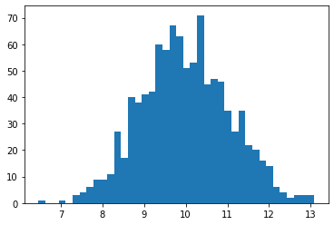
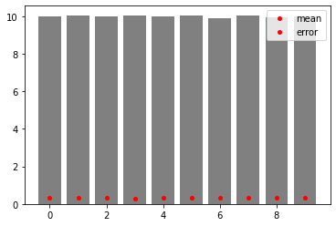

pltでerrorbarを表示する方法
Contents
pltでerrorbarを表示する方法#
平均と標準偏差がもとまっている場合は可視化すると見やすい
使い方#
plt.errorbar(x, y, yerr=error, ecolor=’black’, linestyle=’’)
import numpy as np
import matplotlib.pyplot as plt
# %matplotlib inline
サンプルデータの確認#
sample = np.random.normal(loc=10, scale=1., size=(10, 1000))
mean = sample.mean(axis=1)
std = sample.std(axis=1)
error = std / np.sqrt(10)
plt.hist(sample[0], bins=40)
plt.show()

plt.plotを用いてplotしてみる#
分散の表現がとてもわかりづらい
for i in range(sample.shape[0]):
plt.bar(i, mean[i], color='gray')
plt.plot(i, error[i], 'ro', markersize=4)
plt.legend(['mean', 'error'])
plt.show()

plt.errorbartを用いてerrorをplotしてみる#
errorbarに用いる値は標準偏差を用いる
for i in range(sample.shape[0]):
plt.plot(x, mean, 'ro', markersize=4)
plt.errorbar(x, mean, yerr=error[i], ecolor='gray', linestyle='')
plt.ylim([0, 12])
plt.legend(['mean'])
plt.show()
---------------------------------------------------------------------------
NameError Traceback (most recent call last)
<ipython-input-5-cca3bb26beab> in <module>
1 for i in range(sample.shape[0]):
----> 2 plt.plot(x, mean, 'ro', markersize=4)
3 plt.errorbar(x, mean, yerr=error[i], ecolor='gray', linestyle='')
4
5 plt.ylim([0, 12])
NameError: name 'x' is not defined